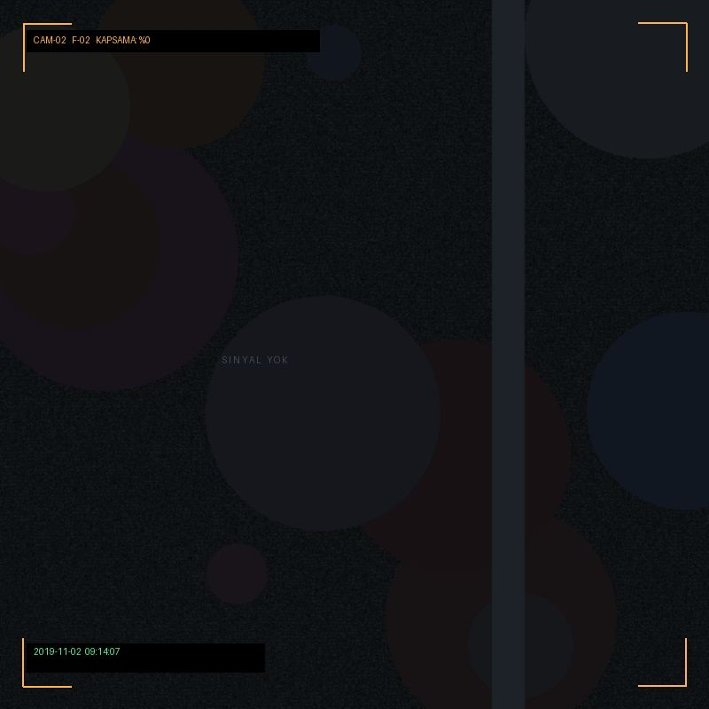
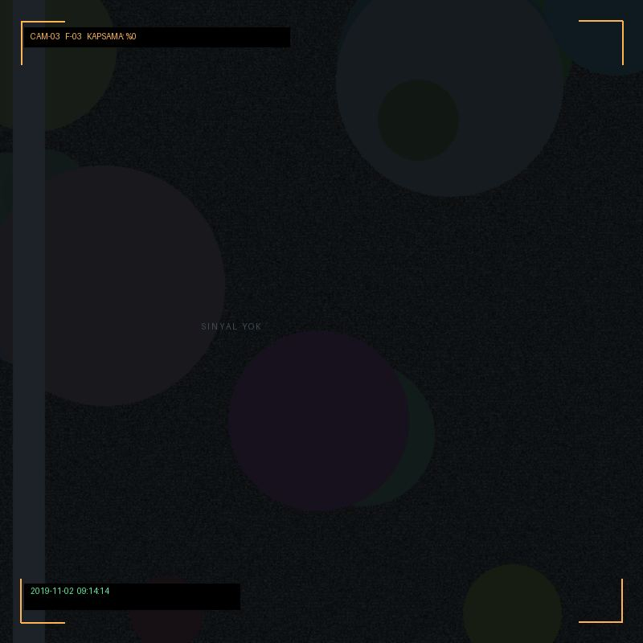
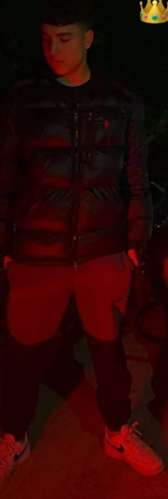
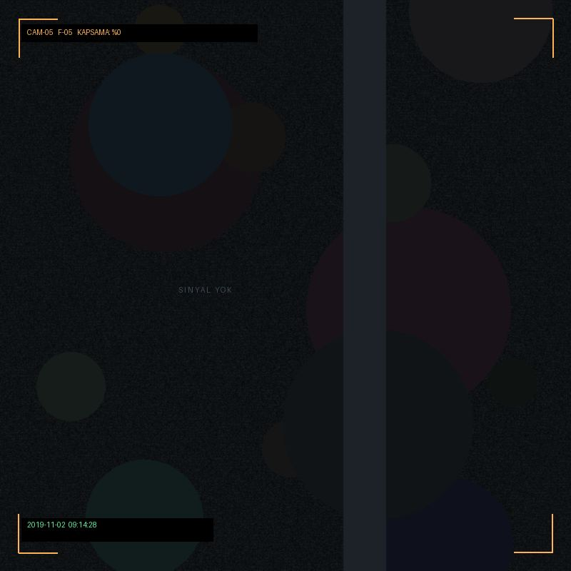
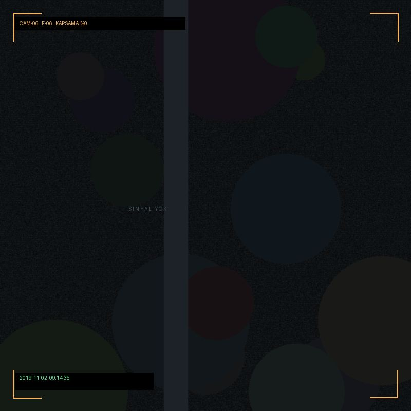
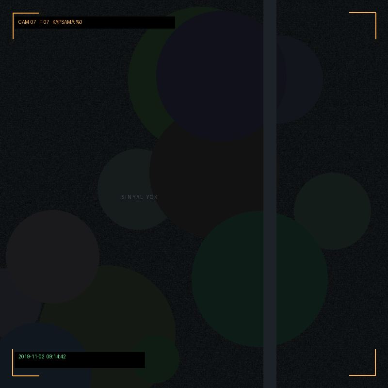

REC-01İlk Satır2019-11-02 09:14
Gözlemci dosyayı açtı. Ad soruldu. Cevap yerine bir numara verildi: C-01. Numara nereden geldiği dosyada yazmıyor.
SORU 01C-01, adının yerine mi geçti — yoksa adı mı değiştirdi?
Bu sayfa bir kutlama değil. Bu bir kayıt. Birisi bir gün oturdu, senin dosyanı açtı ve gözlemleri yazdı. Hiçbir yerde senin adın yok — sadece C-01 var. Sorular da cevapsız bırakılmış. Niye? Bilmiyoruz. Dosya açık.
Gözlemci dosyayı açtı. Ad soruldu. Cevap yerine bir numara verildi: C-01. Numara nereden geldiği dosyada yazmıyor.
Kayıt, açılıştan 4 saniye sonra başlıyor. Öncesi boş. O dört saniyede ne oldu, dosyada yer almıyor.
Bir ses kaydedildi: yüksek, kısa, sadece bir kez. Sonra dosya sessizleşti. Ses dosyada kimseye atfedilmemiş.
Aynı satır üç kez yazıldı. Üçüncüsünde fazladan iki kelime var: "biliyorum." Önceki ikisinde bu yok.
Kayıt üç yıl öncesini gösteriyordu. Geri alındı. Geri alınan kaydın içeriği silinmiş, sadece tarihi kaldı.
Dört ay boyunca hiç kayıt yok. Sebep alanı boş bırakılmış. Sistem boşluğu otomatik doldurmamış, kimse de doldurmamış.
Boşluktan sonraki ilk kayıt: aynı gün, aynı saat, aynı kare. Dosya bunu "devam" olarak işaretlemiş. Devam eden şey aynı mıydı, kopyası mıydı?
Dosya bugün açıldı. Sebep alanına "doğum günü" yazıldı. Doğrulama bekleniyor. Doğrulama gelmedi. Dosya yine de açıldı.
Altı kare. Hepsi aynı özneye ait: C-01. Dosyada kim olduğu yazmıyor — sadece motorun üstünde oturan, karanlık montlu, gözlüklü ve kanepeye uzanmış hâlleri var.






Dosyanın motor kanalında beş isim geçiyor. Hepsi aynı cümleyi kuruyor — ama cümlenin devamı farklı. Devamı dosyada yok.
"Gerçekten iyi bir arkadaşsın."
"Seninle yol yapmak başka, inanılmaz."
"Motorsuz olmuyor. Kesinlikle olmuyor."
"Benim en iyi arkadaşım. Başka da bu kadar iyi arkadaş yok."
"Her şeyi seninle yapmak isterim, ciddi söylüyorum."
Beş ifade, beş isim. Bu sefer isimler kayıt dışı değil — dosyaya yazılmış. Hepsi motor kulübünden. Hepsi aynı şeyi söylüyor, ama farklı cümlelerle.
"Çınar gerçekten iyi bir arkadaş. Yani öyle bir arkadaş ki, motora bindirirsin ve yolun hiç bitmez."
"Seninle yol yapmak başka. Direksiyonda sen, arkada başta sen. Yani motor senin, yol senin."
"Motorsuz olmuyor bu arkadaşlık. Motorsuz olmuyor, o yüzden motor şart. Bitti."
"Benim en iyi arkadaşım. Başka da bu kadar iyi arkadaş yok, kusura bakma."
"Her şeyi seninle yapmak isterim. Motor da, yol da, her şey. Ciddi söylüyorum."
Dosyaya 2 Kasım 2026'da bir satır eklenmiş. Satır şu:
"LGS burada mı?"
Yazan kişinin adı yok. Cevap da yok. Dosya cevap bekliyor — ama bekleyen şey kim olduğunu bilmiyor, çünkü dosyada C-01 yazıyor, Çınar değil.
Cevap: burada. Cevap yazılmadı.
— satır 2026-11-02 21:47 · imza yokBu notu dosyayı açan kişi yazdı. Adını bırakmadı.
"Doğum günün kutlu olsun" cümlesini yazmam gerekiyordu. Yazdım, sonra sildim. Yerine konu kodu yazdım. Kod daha dürüst geldi — kimse bir numaraya kızmaz, numaralar kızmaz.
Sen bunu okuyorsan, demek ki dosya hâlâ açık. Soruların cevabı hâlâ yok. Bu normal. Cevaplar hep sonra geliyormuş gibi bir izlenim var, ama gelmiyorlar. Belki senin okuduğun yerden sonra başlıyorlar.
Dosyada kalan tek cümle şu: "içeriği belirsiz, dosya hala açık."
— imza yok · gözlemci: — · 2026-11-02Defter açık. İstediğin yaz. Kayıt senin adınla değil, girdiğin isimle durur.
Dosyayı kapatmak sana kalıyor. Kapattığında arşive alınacak ve bir daha açılmayacak. Emin misin? Aslında emin de değiliz — bu satırı da bir gözlemci yazdı.